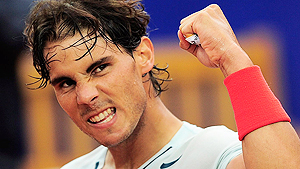
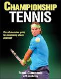

← Bài trước: Mastering Your Choking Response | 🏠 Mental Game Trang chủ | Bài tiếp: → Mental game Mục lục
Chuẩn bị trận đấu
Thư viện kiến thức quần vợt toàn diện — Cơ bản, Phân tích kỹ thuật, Thư viện tham khảo và nhiều hơn nữa
Chuẩn bị trận đấu
Frank Giampaolo

Chuẩn bị trận đấu đúng cách là chìa khóa để trở thành một tay vợt chiến thắng.
Có một đường gãy mỏng giữa thành công và thất bại trong thi đấu. Một khởi đầu kém, sự thiếu tập trung ban đầu hoặc một cơn hoang mang về tự tin có thể khiến một trận đấu có thể thắng nhanh chóng bị mất.
Khi tay vợt tin rằng họ đã chuẩn bị đầy đủ cho một sự kiện sắp tới, niềm tin của họ vào khả năng thắng trận sẽ tăng vọt. Sự sẵn sàng tạo ra sự tự tin.
Để đạt được kết quả trận đấu tích cực một cách nhất quán, việc chuẩn bị của tay vợt phải bao gồm các nghi thức thường lệ. Một tay vợt đã sẵn sàng cho trận đấu tạo ra một bức tường không thể xâm phạm giữ mọi yếu tố con người của sợ hãi.
Những tay vợt bỏ qua các nghi thức trước trận đấu thường không biết mình đã bắt đầu một vòng xoáy xuống dốc dẫn đến thất bại. Sự thiếu tự kỷ luật dẫn đến sự tự nghi ngờ, một tình trạng thúc đẩy sự lo âu và sau đó gây ra sự thiếu tự tin và tự tin thấp. Những lực lượng tiêu cực này có cách thúc đẩy sự thiếu kiểm soát bản thân vào ngày thi đấu.
Bài viết này nhằm giúp các tay vợt ở mọi cấp độ tìm thấy trạng thái sẵn sàng này và biến đổi từ một người bình thường thành một tay vợt chiến thắng. Nó tập trung vào ba lĩnh vực quan trọng của chuẩn bị: hình dung trước trận đấu, trinh sát đối thủ và chuẩn bị thể chất trước trận đấu.

Những quá trình nội tâm nào tạo nên khuôn mặt thi đấu của bạn?
Hình dung trước trận đấu và hình ảnh hóa
Chuẩn bị cho trận đấu liên quan đến một loại tự huyền bí. Tay vợt sử dụng một loạt các quá trình nội tâm để thúc đẩy một sự biến đổi để mặc trang phục thi đấu của họ.
Một kỹ thuật mạnh mẽ nhưng ít được quan tâm có thể đóng góp rất lớn cho quá trình này là sử dụng hình dung và hình ảnh hóa. Đối với hình dung trước trận đấu, một tay vợt nên dành 20 phút trước trận đấu để hình dung lại mục tiêu thi đấu cho sự kiện sắp tới.
Những gì chúng ta thường nghĩ quyết định những gì chúng ta tạo ra. Phản hồi đúng với những thách thức đó là một hành vi đã học được được tăng cường bởi việc huấn luyện hình dung và hình ảnh hóa tích cực.
Tay vợt bắt đầu quá trình tự huyền bí này bằng cách tìm kiếm một khu vực yên tĩnh xa khỏi các đối thủ và sự phân tâm khác. Với mắt đóng lại, tay vợt hít sâu và thở ra vài lần để thư giãn. Sau đó, anh ta tạo ra một hình ảnh tinh thần sống động về nhiều nhiệm vụ được thực hiện thành công.
Điều này tăng cường nhận thức tinh thần của tay vợt và xây dựng sự tự tin của anh ta. Tay vợt nên lặp lại bộ phim này nhiều lần để củng cố suy nghĩ. Trải nghiệm hình dung này thực sự đào tạo tay vợt để thực hiện các kỹ năng tưởng tượng.
Các cú đánh hoàn hảo là một lĩnh vực cho hình dung trước trận đấu.
Các chủ đề hình dung trước trận đấu là vô hạn, nhưng có thể bao gồm một số hoặc tất cả những điều sau đây: Các cú đánh chính và phụ hoàn hảo. Các nhóm các mẫu chủ động hoàn hảo. Các mẫu chơi thành công đối với các phong cách đối thủ khác nhau. Các nghi thức giữa điểm. Các giao thức xử lý các vấn đề cảm xúc thông thường.
Thực hiện hình dung mỗi đêm cũng tối đa hóa hiệu quả vào ngày thi đấu. Khi một tay vợt đi ngủ, phần bên phân tích, phán xét của não bộ tắt đi trong khi phần sáng tạo, trạng thái mơ của não bộ thức dậy. Đây là trạng thái gần như vô thức khi các hình ảnh tích cực được khắc sâu.
Hình dung hoạt động tốt nhất khi tay vợt rất yên tĩnh, chẳng hạn như khi họ đang ngủ, thức dậy hoặc đơn giản là thư giãn trong phòng của họ. Hình dung tích cực tạo ra một quan điểm lạc quan có thể thay đổi thái độ tiêu cực, nâng cao tâm trạng và giảm mức độ căng thẳng cạnh tranh độc hại.
Trinh sát đối thủ
Quan sát đối thủ sắp tới có thể cung cấp cho tay vợt thông tin để chuẩn bị chiến lược có thể làm khác biệt trong trận đấu.
Các khu vực cần trinh sát bao gồm những sau đây:
Điểm mạnh và điểm yếu của các cú đánh (các tay vợt cao cấp cũng nên xem xét khu vực đánh ưa thích của đối thủ). Phong cách chơi chính. Các mẫu giao bóng và trả giao bóng ưa thích, đặc biệt là trên các điểm quan trọng. Các tùy chọn bóng ngắn ưa thích.
Trinh sát đối thủ nên bao gồm phong cách chơi.
Sự di chuyển, sự linh hoạt và sự bền bỉ. Sự chịu đựng sự thất vọng. Sự tập trung. Sự ổn định cảm xúc.
Trinh sát đối thủ nên tiếp tục từ giai đoạn trước trận đấu, qua trận đấu thực tế, và đôi khi ngay cả sau trận đấu, nơi các gợi ý về tính cách và cảm xúc của một tay vợt đôi khi trở nên rõ ràng.
Giãn cơ ngày thi đấu
Để có hiệu suất toàn diện tốt hơn cũng như giảm nguy cơ chấn thương, tay vợt nên tích hợp một quy trình giãn cơ thường xuyên.
Phần 1 là một ấm nóng năng động để nâng nhiệt độ cơ thể cốt lõi. Chạy nhẹ với các vòng xoay cánh tay chậm, chạy ở chỗ hoặc nhảy dây nhẹ sẽ có hiệu quả tuyệt vời để làm lỏng cơ thể.
Phần 2 là một sự tiến triển vào một loạt các giãn cơ động: các chuyển động cụ thể cho quần vợt bao gồm sự linh hoạt lỏng lẻo. Các đề xuất bao gồm vòng xoay vai, xoay thân và các động tác ngồi và quỳ cho phần dưới cơ thể.
Nghi thức ấm nóng trước trận đấu
Sam Sumyk, huấn luyện viên của Victoria Azarenka, nói, "Quy trình trước trận đấu của Vika luôn bao gồm một nghi thức giãn cơ 45 phút theo sau là một quy trình đánh bóng 45 phút."
Trong khi các tay vợt chuyên nghiệp có cơ hội tận hưởng các quy trình trước trận đấu của họ nhiều hơn, những tay vợt thường xuyên ấm nóng cả các cú đánh chính và phụ của họ có một lợi thế lớn trong các trận đấu chặt chẽ.
Luyện tập các cú thuận tay và trái tay trước trận đấu là quan trọng, nhưng một tiebreak đầu tiên có thể quyết định bởi một tay vợt thực hiện một cú đánh lưới thắng hoặc cú đánh bóng xoáy lên. Sự tự tin thực hiện các cú đánh như vậy vào thời điểm quyết định mà không do dự bắt nguồn từ việc ấm nóng chúng trước trận đấu một cách đúng đắn.
Những tay vợt bỏ qua các cú đánh phụ của họ có một tư duy rất khác khi đối mặt với tình huống tương tự. Thay vì di chuyển tự nhiên về phía trước để đánh cú đánh lưới thắng, họ do dự và bị bắt phải nghĩ, Tôi không nhớ lần cuối cùng tôi đánh một trong những cú này.
Chạy nhẹ trước trận đấu
Khi thời gian trận đấu sắp đến, tay vợt thường cảm nhận được một làn sóng sợ hãi và lo âu. Sự sợ hãi này kích hoạt một lượng lớn adrenalin; đã đến lúc chiến đấu hoặc chạy trốn.
Khi tay vợt cảm nhận được cảm giác này, họ có thể đốt cháy sự lo lắng về hiệu suất của mình bằng cách chạy một khoảng ngắn. Tay vợt cũng có thể làm điều này vào đêm trước trận đấu, vào buổi sáng trước khi đánh bóng trong ấm nóng, và lại một lần nữa ngay trước khi trận đấu bắt đầu.
Việc nâng nhiệt độ cơ thể cốt lõi làm ấm các nhóm cơ và làm lỏng sự căng thẳng khi đốt cháy lượng adrenalin dư thừa, làm yên tâm tâm trí và giúp tay vợt bắt đầu trận đấu ở trạng thái hiệu suất cao nhất.
Chạy nhẹ trước trận đấu hoặc các lần chạy nên được tùy chỉnh dựa trên mức độ thể chất và sự ổn định cảm xúc của tay vợt, cũng như thời gian có sẵn. Nếu một tay vợt không phải là loại rất lo lắng, cô ấy có thể chỉ cần chạy một khoảng ngắn trước trận đấu.
Frank Giampaolo đã là một huấn luyện viên quần vợt hàng đầu ở Nam California trong 25 năm, và là tác giả của một tác phẩm mới toàn diện về phát triển tay vợt, Quần vợt vô địch, cũng như tác giả của The Tennis Parent's Bible. Anh ấy đã tổ chức các workshop về huấn luyện tinh thần trên khắp thế giới, và người tham gia bao gồm hơn 60 tay vợt trẻ đã giành được các danh hiệu vô địch quốc gia đơn nam Hoa Kỳ. Anh ấy thường xuyên nói tại các hội nghị huấn luyện và đã xuất hiện trên truyền hình quốc gia trên toàn thế giới.
Để tìm hiểu thêm về các workshop huấn luyện tinh thần và cảm xúc của anh ấy, Nhấp vào đây!

Quần vợt vô địch: Hướng dẫn toàn diện
Trong cuốn sách mới này từ Human Kinetics, Frank Giampaolo trình bày một cuộc đời của những hiểu biết huấn luyện cấp cao trong mọi khía cạnh của phát triển quần vợt - đánh giá thể chất, phát triển kỹ năng, yếu tố tinh thần, chuẩn bị trận đấu, luyện tập và lập kế hoạch. Cuốn sách này được thiết kế để giúp tay vợt và huấn luyện viên gia tốc đường cong học tập bằng cách tùy chỉnh quá trình cho nhu cầu của từng tay vợt cá nhân.
NHẤN VÀO ĐÂY ĐỂ ĐẶT MUA!
Nguồn: tennisplayer.net lưu trữ — Chuẩn bị trận đấu.docx (thư viện giảng dạy của John Yandell, 2002-2022). Trích xuất và hiển thị dưới dạng HTML cho Tennis Future Lab.